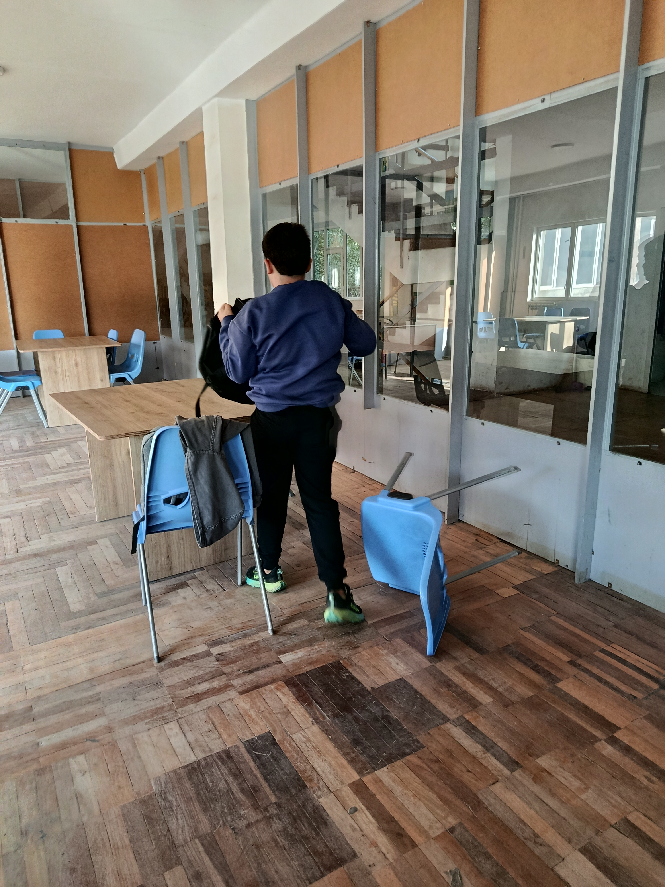
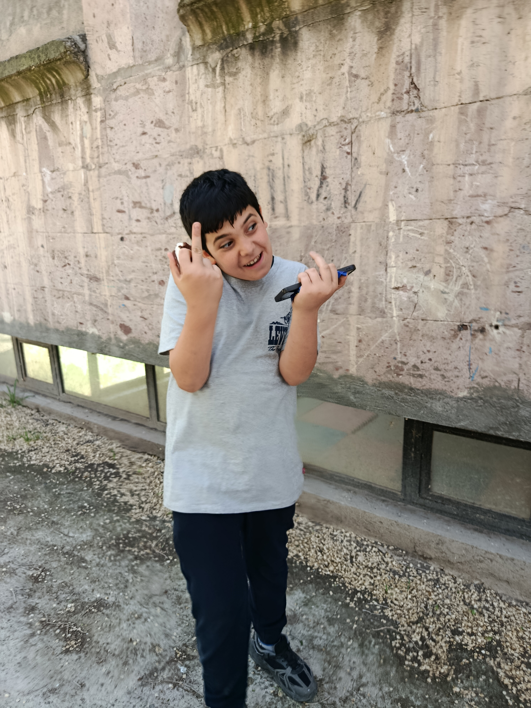
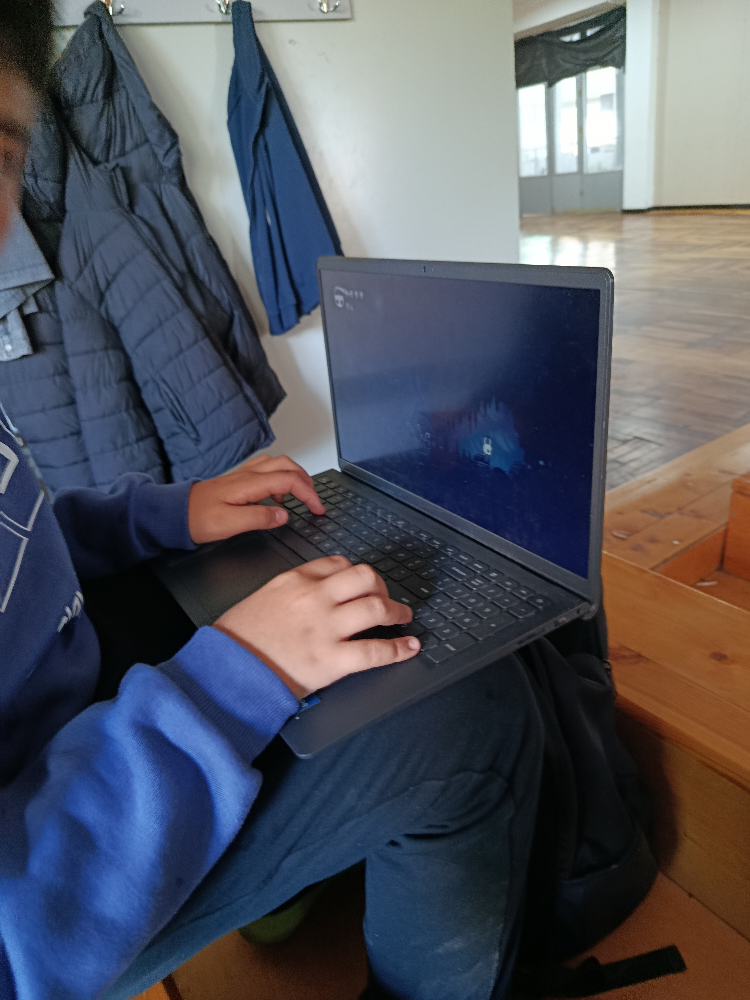
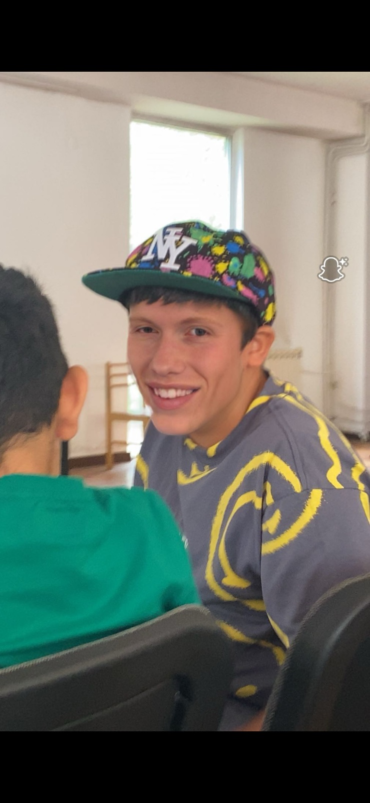

ԳԱԳՈ.
Հավաքածու




Ես․․․
Բարև ես Գագիկն եմ եկել եմ արևելյան դպրոցից նաև ես առաջին դասարանից եմ եկել դպրոց։ Սիրում եմ սովորել լեզուներ ու նաև սիրում խախաղ համակարգչային խաղեր fortnite rocket lige counter strike Սիրելի առարկան գեռմաներեն է նաև սովորում եմ ֆռանսերեն աստղակերպով ես առյուծ եմ շատեմ սիրում որ ինձ ուշադրություն եմ դարցնում բայց գիտեմ որ դա վատ բնավորություն եմ ցույց է տալիս նարցիզությու։